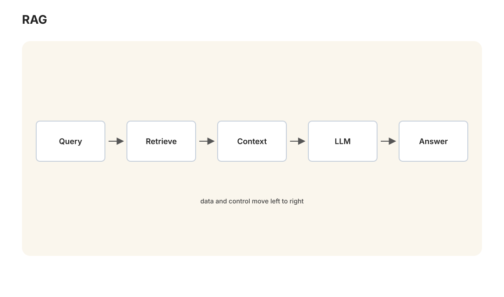

本讲目录
第 08 讲 · 让输出更好更稳：四个工程
诞生场景：2022 年底，几亿人突然拥有了一个强大但古怪的员工：它博学、快速、不知疲倦，但每次回答都带随机性、会一本正经地编造事实、记性只有一个对话框那么长、复杂任务走到一半会迷路。想把它从"聊天玩具"变成"可靠的生产力"，靠的不是重新训练模型（那是实验室的事），而是在模型外面做工程。这套工程实践常被概括为：提示词工程 → 上下文工程 → 编排工程 → 循环工程——每一步都在回应前一步暴露的限制；不同团队对这些词的边界并不完全相同。本讲把这条路径讲透，它也是理解下一讲（智能体、MCP、Skills）的地基。

学习层：检索到证据，离答案还差几步
具体谜题：命中相关片段，为什么仍可能不能回答？
把 RAG 缩成一个可审计的流水线：固定小语料库 → 切块 → toy 检索 → （可选）重排 → 受预算限制的 context → 结论与 citation。请先想一个多证据问题：若一个片段说“增大 \(k\) 可能提高召回”，另一个片段才说明“关键证据不在预算内就应拒答”，只命中前者能不能安全地给出完整建议？再想一个不可回答问题：语料提到“不是实际 embedding”，却没有给出某个模型的向量维度时，引用这句话能不能变成一个维度数字？
先做预测，再改变一个旋钮
在打开实验前写下四个预测：① 减小 chunk size 会让边界更细，但更容易把一个事实拆开；② 增大 top-k 通常会提高候选召回，同时把无关片段带进来；③ rerank 只能重排已进入候选集的 chunk，不能找回初排完全漏掉的证据；④ 对不可回答问题，最好的输出是 abstain，而不是因为检索到“相关词”就补一个听起来合理的数字。然后分别把 overlap、top-k 和 context budget 调到极端，观察哪个瓶颈在起作用。
最小模型：四个账本
- 切块账本：本实验把空格分隔的字符串当作 toy token，并把每个 fact 当作一个段落边界；窗口不会跨越段落，chunk size 是每块 token 数，overlap 是同一段内相邻块重复的 token 数。它是结构感知切块的最小玩具模型，不是任何模型的真实 tokenizer。
- 评分账本：词面模式只数 query 与 chunk 的共享词。记 \(T_q\)、\(T_c\) 为去重后的词集合，\(s_{lex}=|T_q\cap T_c|/|T_q|\)。toy semantic 模式只把一张页面内写死的人工同义词簇（如“召回/recall/找全”）视为相同概念；它没有调用 embedding，也不宣称理解了真实语义。
- 排序账本：top-k 先取初排候选；打开 rerank 后，只在一个更大的候选集内按“题目焦点词的额外命中”加一个透明的小分数。该规则是教学用的重排器，不是训练好的 cross-encoder。
- 证据账本：context budget 以 toy token 计，整块装入，装不下的块被跳过。precision 观察装入块中有多少与问题的标注证据相关；必要事实的完整覆盖近似这里的 evidence recall。只有所有必要事实都在 context 中，answerability 才可能为真；citation 还必须真的指向支持该结论的片段。
实验：把“召回”“预算”“支持”分开
无 JavaScript 时的静态读法：实验使用固定的空格分词小语料库，不调用真实向量模型。每个 fact 同时模拟一个段落边界，切块窗口只在段内滑动。默认可先选“多证据：top-k 与上下文噪声”，再点“完整证据预设”建立可回答基线，然后分别缩小 chunk、top-k 或 context budget，观察答案在哪一步失去支持。下表中的 fact 是审计用的证据单元；一个或多个 chunk 只有把相关 fact 的 token 全部带入 context 后，才算覆盖该 fact。
| 来源 | 固定事实单元 |
|---|---|
| S1 · RAG 运行规约 | citation 指出来源但不保证来源为真；多证据问题要合并不同片段，命中相关片段不等于答案完整。 |
| S2 · 分块实验记录 | 小 chunk 边界细但可能拆事实；overlap 保留邻接上下文却增加重复和预算；增大 top-k 可能提高 recall 也可能增加噪声。 |
| S3 · 检索评分手册 | lexical 只数词面重合；toy semantic 只用人工同义词簇，不是 embedding；rerank 不能找回未召回的片段。 |
| S4 · 部署检查表 | 所有必要证据必须进入 context budget；缺关键证据应 abstain；相关词很多的 citation 也可能不支持结论。 |
| S5–S6 | temperature/caching 的边界提示，以及本实验使用的人工同义词表。 |
固定问题至少包括：多证据“如何在提高 top-k 召回时避免噪声并保持答案受支持？”、可回答“overlap 为什么可能有用又有代价？”、不可回答“这套课程使用的 embedding 模型具体是多少维？”。最后一个问题会检索到“toy semantic 不是实际 embedding”这类相关背景，但语料没有维度事实；安全结论必须是“语料不足，abstain”。
每次改变参数都读四处：① chunk map 的边界与 fact 标签；② 初排/重排的 rank 与分数；③ context 中实际装入的 citation；④ evidence coverage、precision/recall、answerability 和“citation 是否支持结论”。若只看到相关片段而没有所有必要事实，不能把生成答案写成已被支持。
误区与边界：RAG 是证据管线，不是真实性证明器
- 相关不等于支持：关键词命中、语义相近、rerank 排在前面，都只说明检索关系；结论需要命题级证据。引用也不保证来源本身真实、没有过期或没有被误读，RAG 不能把有问题的来源变成真相。
- 召回不等于可用 context：top-k 取到的块还要经过预算、去重、截断/跳过和顺序安排。小块可能丢失条件，大块可能把噪声一起带入；overlap 不是免费午餐。
- 重排有边界：rerank 的上限受候选召回限制；一个完美的重排器也不能排序一个根本没被召回的必要片段。toy semantic 的同义词表更不能替代真实 embedding 的训练分布与评估。
- 拒答是系统能力：当必要证据缺失、冲突或不满足时间/权限条件时，abstain 比流畅补写更诚实。生产系统还需要独立评测、来源质量检查、权限隔离和人工升级；citation 只是可追溯性的一个接口。
回到工程判据：把回答拆成可验证的命题
对每个结论 \(h_i\)，维护它需要的证据集合 \(E_i\) 和实际 context 中的覆盖集合 \(\widehat E_i\)。若 \(E_i\not\subseteq\widehat E_i\)，系统应报告证据不足，而不是由生成器把缺口补齐；若 citation 指向的 chunk 只共享词面、没有覆盖 \(E_i\)，则该 citation 不能支持 \(h_i\)。这比“答案看起来像对的”更接近可审计的 RAG 评测。
迁移题：把 toy 规则搬到真实知识库
若真实文档中一个政策条件跨越标题、表格和脚注，应该如何定义 chunk 的边界与 citation 粒度，才不会把半句当成完整证据？若把 top-k 从 4 提到 20，除了 recall，还要测哪些噪声、成本、延迟和答案支持指标？最后设计一个不可回答检测：它应检查“没有相关词”之外的哪几类失败（缺必要字段、来源冲突、权限不可见、时间范围不满足）？
学习单元：推理预算与可靠性——找到答案，不等于交付答案
具体谜题：五条路径里有一条正确，用户一定会收到它吗？
一个系统为同一道题生成多条候选推理。评测账本发现：五条路径中至少一条答对了，但最后采用的那一条仍可能是错的。问题是：错误是否独立？谁来从候选中选择？每多跑一条要付多少 token 和延迟？如果 verifier 会漏掉真答案，也会放过假答案，继续采样究竟是在提高机会，还是在提高选错机会？先不要把“找到过答案”直接写成“用户收到答案”。
先做预测，再改变一个旋钮
请先写下四个预测：① 在单次成功率固定时，独立公式 \(1-(1-p)^n\) 会不会高估存在相关错误时的 pass@\(n\)？② pass@\(n\) 上升是否必然让最后输出正确率同样上升？③ verifier 的假阳性率升高时，增大 \(n\) 会不会反而给错误候选更多“被选中”的机会？④ 在固定加权平均候选槽位下，把样本更多地给难题，是否总比平均分配好？打开实验后，依次切换任务族、聚合器、verifier 质量和早停规则，检查哪一个预测只在局部成立。
最小模型：一张固定 toy evaluation ledger
本单元不把任何数字当成真实模型事实。账本固定为 1,000 个题目：Easy/Medium/Hard 的权重分别为 40%/40%/20%。每个候选样本有任务族自己的边际成功率 \(p\)、相关性参数 \(\rho\)、token 成本和延迟成本：
| 任务族 | 题目占比 | 单次成功率 \(p\) | 共享错误 \(\rho\) | 每样本成本 |
|---|---|---|---|---|
| Easy | 40% | 0.78 | 0.05 | 500 tokens · 0.45 s |
| Medium | 40% | 0.58 | 0.25 | 850 tokens · 0.80 s |
| Hard | 20% | 0.38 | 0.55 | 1,300 tokens · 1.35 s |
- 相关路径：对每道题，以概率 \(\rho\) 进入共享状态；共享状态一次决定全体候选都对或都错。其余概率下，每条路径独立地以概率 \(p\) 成功。这样每条路径的边际成功率仍是 \(p\)，但错误并非独立。
- 候选账本：\(n\in\{1,3,5,7,9\}\) 是最多生成的候选数。pass@\(n\) 只问前 \(n\) 条里是否至少有一条成功；它不记录聚合器最后交付哪一条。
- 聚合账本：多数投票交付多数答案；verifier 逐条检查候选，真答案以 TPR 被接受，假答案以 FPR 被接受，交付第一条被接受的候选；若没有候选被接受则 abstain。TPR/FPR 是这个 toy 选择器的性质，不是模型或现实 verifier 的测量值。
- 停止与成本：固定 \(n\) 会跑满；多数投票可在结果已锁定时早停；verifier 可在首次接受时早停。实际 token/延迟按真正跑过的样本累计，而 pass@\(n\) 是“给足 \(n\) 条路径”的能力账，不应冒充用户实际收到的正确答案。
- 自适应边界：只有混合 40/40/20 任务启用重分配：\(n=3\) 时 Easy/Medium/Hard 为 \(1/3/7\)，\(n=5\) 时为 \(3/5/9\)；\(n=1,7,9\) 暂保持 \(n/n/n\)。这些映射保持加权平均候选数为 \(n\)，把槽位转向 Hard；token/延迟因任务族单样本成本不同而另行记账，不能把它们称为等 token 成本。
若把同一个 \(p\) 错当作独立抽样，就会写出 \(1-(1-p)^n\)；当 \(\rho>0\) 时，这个公式只是反事实对照，不是本账本的结果。
实验：把“找到”“选中”“付出”分开
无 JavaScript 时的静态读法：固定账本含 1,000 道 toy 题，使用固定种子生成相同的共享/独立样本路径；不调用模型、网络或真实评测集。默认先看混合任务、\(n=5\)、verifier 的高质量档和“首次接受早停”。打开自适应预算时，只有混合 40/40/20 使用明确映射：\(n=3\to1/3/7\)、\(n=5\to3/5/9\)、\(n=1,7,9\to n/n/n\)；它保持加权平均候选数为 \(n\)，但 token/延迟仍按任务族成本另计。表中应同时读：pass@\(n\)（候选机会）、最终输出正确率（用户收到的答案）、abstain、实际样本数、token/延迟成本和题级比例的 Wilson 95% 区间。这里把延迟按样本串行相加；并发生成时的墙钟时间需要另建账本。点击“重置”回到同一账本；改变参数只改变账本的聚合/停止方式，不重抽一套数据。
| 观察量 | 它回答的问题 | 不能推出的结论 |
|---|---|---|
| pass@\(n\) | 前 \(n\) 条候选中至少有一条正确吗？ | 用户最后收到的是正确答案吗？ |
| final accuracy | 聚合器实际交付的答案正确吗？ | 候选池从未出现过正确答案。 |
| realized cost | 早停后实际消耗了多少样本、token、延迟？ | 更便宜就一定更可靠。 |
| Wilson 95% interval | 若把这 1,000 题视作目标总体的抽样，题级比例的有限样本不确定性有多大？ | 固定 PRNG 回放本身重新随机了，或 toy 区间是现实模型性能区间。 |
先用多数投票把 \(n\) 从 1 拖到 9，再切到 verifier 并把 FPR 从低档调高；最后在相同加权平均候选槽位下比较固定分配与按难度自适应分配，同时查看 token/延迟是否改变。若自适应策略更好，只能说“在这张账本、这个选择器和这个成本定义下更好”，不能概括成普遍定律。
误区与边界：多采样不是可靠性的自动售货机
- pass@\(n\) ≠ 最终正确率：前者是候选生成能力，后者还经过投票、verifier、排序、拒答和早停；中间任何选择器都可能丢掉正确候选。
- 相关错误会打破独立直觉：相同提示、知识缺口、检索材料和推理偏差会让候选一起错。账本里的 \(\rho\) 只是一种可计算的共享状态模型；真实相关结构可能更复杂，不能从一次曲线反推出模型内部因果。
- 选择器决定收益能否兑现：高 TPR/低 FPR 的 verifier 才可能把候选池变成最终收益；FPR 高时，增加 \(n\) 也增加误接收机会；TPR 低时，正确候选会被拒掉，系统可能 abstain。
- 预算自适应不是普适结论：按题目难度分配样本可能在固定平均候选槽位下改善最终正确率，也可能因每题 token 成本不同、难度估计错误、verifier 质量、相关性或延迟约束而变差；必须预注册规则并在独立 holdout 上比较。
- 区间的含义有限：这里的区间只反映固定有限账本/确定性回放的比例不确定性近似；它不是随机模型、真实用户分布或跨模型泛化的置信保证。
1. 先理解你的"员工"：LLM 的三个物理性质
工程是针对材料特性的设计，先看清材料。
1. 输出是采样，不是查询。模型每一步给出的是下一个 token 的概率分布（第 07 讲），实际输出通常还要经过解码策略。温度 \(T\) 控制分布的尖锐度——把 logits 除以 \(T\) 再过 softmax：
\(T \to 0\) 在常见实现中趋向贪心选择，输出通常更确定但不保证绝对相同；\(T\) 大则分布更平（可能更有多样性，也可能更不稳定）。top-p 采样则只在累积概率前 \(p\) 的候选里采。工程含义：同一个问题问两遍，答案本来就可以不同——需要稳定输出的场合（分类、抽取）可把温度调低、把格式钉死，但仍应做校验；需要创意的场合反之。
2. 幻觉是本性，不是 bug。模型的训练目标是"输出像训练语料的文本"（第 07 讲的极大似然），不是"输出真话"。当它不知道答案时，损失函数曾奖励它给出"最像答案的答案"——于是编造的参考文献格式完美、编造的 API 用法看起来无比合理。对齐训练能缓解但无法根除。工程含义：关键事实必须在模型外部验证（第 14 讲展开）。
3. 上下文就是全部记忆。模型没有硬盘：权重冻结着训练时的知识（有截止日期），除此之外它只"知道"当前上下文窗口里的内容，对话关闭即失忆。且窗口有限（数万到百万 token），塞太满还会"变笨"。工程含义：你负责在每次调用时把该给的信息给全——这件事重要到催生了一个专门的工种，见第 3 节。
2. 提示词工程：把话说明白
Prompt engineering——通过设计输入文本来引导输出质量。GPT-3 发现 in-context learning（第 07 讲）后，"改输入"成了不训练模型就能"编程"模型的唯一手段。核心技法五条，每条都有明确的机理：
1. 把任务说完整：角色（你是谁）、任务（做什么）、约束（格式/长度/语言）、受众（写给谁看）。机理毫不神秘：LLM 在模拟"这段文本的合理延续"，你给的设定越具体，它模拟的目标分布越窄，输出方差越小。
2. Few-shot 示例：给 2~5 个"输入→输出"范例再提问。对格式要求严格的任务（抽取、改写、打标签），一个好例子顶一百字描述——示例直接展示了目标分布的样本。
3. 思维链（Chain-of-Thought, CoT）：在部分模型与任务上，要求模型先生成中间步骤再给答案，可能通过把中间结果写回上下文来帮助多步问题（Wei et al. 2022；一句固定提示并不对所有模型、任务或语言都有效）。回到第 06 讲的架构：逐 token 生成时，每一步都能读取此前的文本，因此显式中间结果可以提供一种外置工作记忆；代价是更多 token、更多潜在错误和更高延迟。它是一个需要基准评测的策略，不是“写得越长越会推理”的保证。
4. 自洽性（self-consistency）：同一问题采样多条推理路径，对最终答案投票。它只有在教学用的条件下才有清楚的多数投票保证：单次正确率 \(p > 0.5\)，各次错误近似独立或至少弱相关，并且答案空间能合理投票。真实采样常共享模型偏差、提示和检索材料，错误可能高度相关；因此多采样不自动等于可靠性提升，成本也会增加。
5. 给出口：明确允许"信息不足时回答不知道"。否则你等于强迫模型在"编一个"和"违抗指令"之间二选一，而它的训练偏向前者。
提示词的现实边界
提示词工程解决"单次调用说清楚"的问题，但它有天花板：说得再清楚，模型参数和当前上下文没有的事实它还是不知道（知识覆盖、私有数据、时效性），太长的任务它还是可能迷路。前者引出上下文工程，后者引出编排与循环。"魔法咒语式提示词"（"深呼吸""我给你小费"）的收益依赖模型与任务，把任务、材料和验证标准交代清楚才是更稳的部分。
3. 上下文工程：把料备齐
Context engineering 是近年常用的一个实践统称，但它与 prompt engineering 的边界因团队而异。它强调的经验是：决定输出质量的一个首要因素，往往不是指令措辞，而是上下文里有没有干活所需的信息。把 LLM 想成一位新来的、患顺行性遗忘症的天才同事：每次调用时，你递过去的文件夹里有什么，它就只能直接利用什么；模型参数中的先验知识与外部工具仍是另一层来源。
上下文窗口里通常装六类东西：系统提示（长期人设与规则）、对话历史、检索来的资料、工具调用的结果、少样本示例、当前问题。工程要点三条：
1. RAG（检索增强生成）——解决"模型不知道"的标准方案。私有文档、最新资讯不在训练数据里，就在回答前检索出来塞进上下文：
- 切块（chunking）：按文档结构、任务和预算把文档库切成带边界的段落；大小没有对所有语料都适用的固定值；
- 向量化：用嵌入模型把每块变成向量（第 06 讲 word2vec 思想的段落版：语义相近 → 向量相近）；
- 检索：把用户问题也用同一嵌入体系表示，按余弦相似度 \(\cos\theta = \frac{\langle u, v\rangle}{\|u\|\|v\|}\) 等指标取最相近的 \(k\) 块（向量数据库可以把近邻搜索工程化）；具体召回质量取决于嵌入、切块、查询和索引，而不是公式本身；
- 重排（rerank）：用更精细的模型对候选块二次排序，取精华入上下文；
- 生成时要求引用出处，并把每个命题绑定到实际支持它的片段——这能提高可追溯性、帮助审计，但引用不保证来源真实、没有过期或没有被模型误读；RAG 不是事实真伪证明器。
2. 上下文不是越多越好。在一些模型与任务的长上下文评测中会观察到lost in the middle（中间位置的信息利用率可能低于开头或结尾），但效应依赖模型、位置、格式和问题；上下文腐烂也不是固定定律，而是无关信息、旧错误和跑偏历史累积后可能出现的退化。对策：只放相关的，测试不同排序，把关键信息放在可验证的位置，长对话适时重开并带摘要迁移，把"已确认的结论"压缩后再续。
3. 上下文经济学。在标准的稠密全注意力中，序列两两交互的分数矩阵随长度呈二次增长（第 06 讲）；实际延迟和显存还取决于 hidden size、KV cache、注意力实现、批处理和服务方式，因此不能只用 \(O(n^2)\) 预测端到端成本。Prompt caching 可以复用满足服务商命中条件的稳定前缀，减少重复计算或计费；命中规则、价格和收益由具体服务商与配置决定，不应写成固定折扣。把稳定内容放前、多变内容放后常是有用的缓存设计，但仍要测命中率、时延和质量。上下文是稀缺资源，"该给什么"与"不给什么"同等重要——这个约束到第 09 讲会再次出场，成为 Skills 设计"延迟加载"的直接动机；第 19 讲再把它接到 TTFT、KV cache、批处理与排队的服务账本。
4. 编排工程：把活拆开
单次调用有极限：让模型"一口气写一份 50 页的行业研报"，效果必然平庸——任务太长、要求太多，注意力和篇幅都不够分。编排（orchestration / workflow）工程的思路：把大任务拆成多个小步骤，每步一次 LLM 调用（或普通代码），用确定性的程序骨架把它们接起来。
常用模式五种：
| 模式 | 结构 | 适用 |
|---|---|---|
| 链式（chaining） | A 的输出 → B 的输入 → C…… | 天然分阶段的任务：大纲→初稿→润色 |
| 路由（routing） | 先分类，再分发给不同的专用提示词 | 客服（退款/技术/咨询各有专家提示） |
| 并行（parallel） | 同一输入多路同时处理再合并 | 多角度审稿、多文档分别摘要 |
| 生成-评审（generator–critic） | 一个生成，另一个按清单挑错，打回重做 | 代码、译文、任何有质量标准的产出 |
| Map-Reduce | 分块各自处理（map），再汇总（reduce） | 超长文档：逐章摘要后再总摘要 |
编排的精髓在于确定性骨架：流程、分支、重试、数据校验由普通代码负责（可靠、可测试、可调试），LLM 只出现在真正需要智能的节点上。每个节点做且只做一件事，输入输出格式钉死（JSON），于是每个节点可以单独测试、单独优化——软件工程的模块化纪律，原样适用于 LLM 系统。
一个真实案例的骨架（一套每日财经资讯自动化管道）：抓取 RSS（纯代码）→ 聚类去重（嵌入向量 + 算法）→ 实体抽取（规则）→ 主题分类（小模型，一次一小任务）→ 深度分析卡片（大模型 + 精心准备的上下文：近期事件 + 领域背景知识注入）→ 产出网页（纯代码）。注意 LLM 只在两个节点出现，且每个节点的提示词、上下文、输出格式都是独立设计和迭代的——这就是编排工程的典型形态。
5. 循环工程：让它自己跑
编排的前提是你能预先画出流程图。但有些任务的路径没法预知——"帮我修好这个 bug"：要先看报错，根据报错猜原因，读相关代码，改一下，跑测试，可能失败，再改……下一步做什么取决于上一步的结果。流程图画不出来，就把画流程图的权力交给模型自己——循环工程（agentic loop）：
循环：
1. 模型观察当前状态（任务目标 + 已收集的信息 + 上一步行动的结果）
2. 模型思考并决定下一步行动（调用某个工具 / 宣布完成）
3. 程序执行该行动，把结果追加进上下文
直到：任务完成 / 达到步数上限 / 需要人类介入
这个"思考→行动→观察"的循环模式称为 ReAct（Reason + Act, 2022）。LLM 从"函数"升级成了"过程中的决策者"——这就是智能体（agent）的定义级特征，下一讲的主角。循环工程的核心关切恰恰是稳：
- 停机条件：步数上限、预算上限、明确的完成判据——否则智能体会在死胡同里烧钱打转；
- 错误恢复：工具报错要喂回给模型让它调整，而不是让整个循环崩溃；连续失败 N 次则升级给人类；
- 验证节点：在循环里内置检查（跑测试、schema 校验、独立的评审调用），不让模型"自己宣布成功"就算数；
- 上下文管理：循环每转一圈上下文就变长，长循环必须做摘要压缩——第 3 节的技术在这里成为生死攸关的基础设施。
四个工程至此连成一条线，每一步都是对前一步天花板的回应：
自由度逐级上升，对可靠性工程的要求也逐级上升。行业的共识经验：能用编排解决的不要上循环（确定性流程更便宜、更可控、更好调试），循环留给真正无法预知路径的任务。
6. 界碑：工程还是训练？
最后厘清本讲的边界。改变模型行为有两条路：改输入（本讲的一切）和改权重（微调）。何时考虑微调？——当一组稳定、代表性的示例表明，提示词、检索、工具和编排仍不能满足所需的风格/格式/行为，或者需要把能力迁移到更小、更快的模型；同时还要评估数据质量、遗忘、偏差、维护和安全成本。很多项目适合先建立可复现的工程基线，再用评测决定是否微调；但这不是“永远先穷尽工程手段”或“问题一定只是上下文没给够”的普遍规则。工程迭代通常更容易回滚，训练资产则会受到数据、目标和基座变化的影响，二者都需要版本化与回归评测。
本讲小结
| 概念 | 一句话 |
|---|---|
| 材料特性 | 采样随机 + 幻觉本性 + 上下文即全部记忆 |
| 温度 | logits 除以 \(T\) 再 softmax；稳定任务调低 |
| 提示词工程 | 角色/任务/约束/示例/给出口；把目标分布收窄 |
| CoT | 中间步骤写进上下文 = 外置工作记忆，串行深度随长度增长 |
| 自洽性 | 在 \(p>0.5\) 且错误弱相关等教学条件下，多链投票可能降方差；现实需评测 |
| 上下文工程 | 决定质量的是"料"而非"咒语"；RAG、上下文选择与退化监测 |
| 编排工程 | 确定性骨架 + LLM 节点；五种模式；模块化纪律 |
| 循环工程 | ReAct 循环；停机/恢复/验证/上下文压缩四件套 |
| 界碑 | 先穷尽工程再考虑微调 |
动手：跑 labs/lab08_prompt_engineering.py——用 DeepSeek API 做三组对照实验：零样本 vs 思维链在数学题上的准确率、温度对输出稳定性的影响、自洽性投票的收益曲线。用数据验证本讲的每个论断。
延伸阅读：Anthropic "Building Effective Agents"（2024，编排五模式的出处，行业公认最清醒的一篇）；Wei et al. "Chain-of-Thought Prompting" (2022)；Liu et al. "Lost in the Middle" (2023)。
下一讲：工程化让 LLM 稳了，但它还被关在文本的笼子里——不能查资料、不能跑代码、不能碰你的文件。给它装上"手"的过程，就是工具调用 → 智能体 → MCP → Skills 这条演化链，也是老师课程大纲里"AI 怎么一步步变得更强大、更通用"的答案。